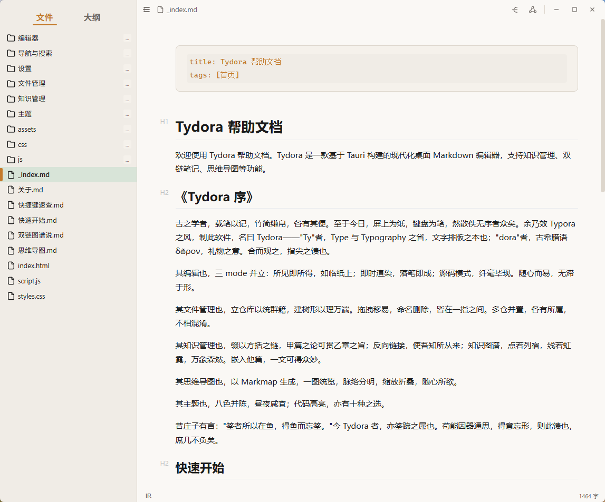
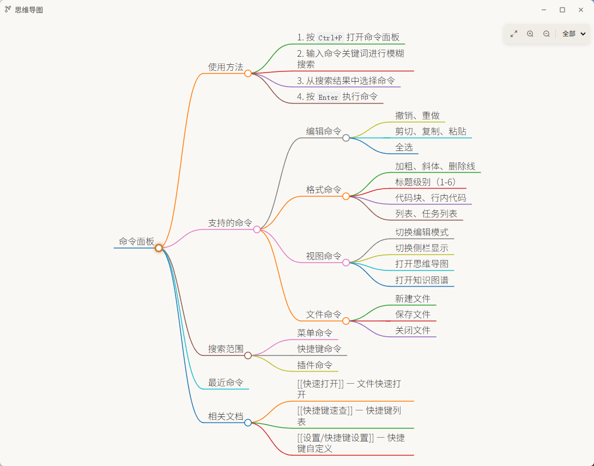
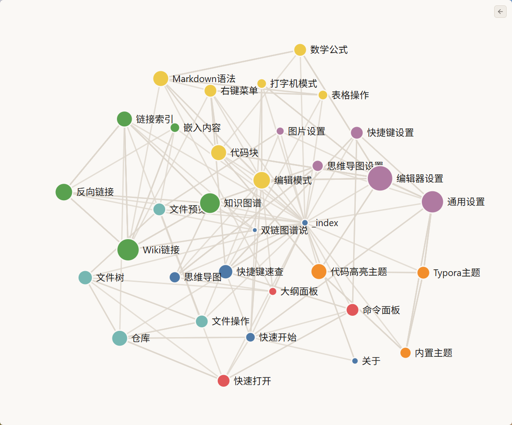

White
# 经典纯白
一款现代化的 Markdown 桌面编辑器
基于 Tauri + Vditor 构建的沉浸式写作工具。
致敬 Typora，将所见即所得的体验化作一份礼物。
你真正想住进去的编辑器。
基于 Vditor 3.x 引擎，支持三种编辑模式——所见即所得（WYSIWYG）、即时渲染（IR）和分屏预览（SV）。内置数学公式、代码高亮、打字机模式、实时大纲与字数统计。所思即所写，无干扰写作。

editor · mint theme · 文件树 + 编辑区
命令面板思维导图 — 全部命令一目了然Ctrl+P 唤出，模糊搜索一切。
强大的命令面板覆盖所有操作：编辑命令（撤销重做、格式化）、格式命令（加粗斜体、标题级别）、视图命令（模式切换、思维导图）、文件命令（新建保存关闭），以及菜单命令、插件命令和快捷键速查。最近使用智能排序，所想即可达。
让笔记互联成网。
基于 Markmap 的思维导图视图，以可视化方式呈现文档结构。独立窗口自由缩放层级，让结构化思考一目了然。配合即将推出的双链（Wiki链接）与反向链接功能，构建你的个人知识网络。

knowledge graph · 知识图谱节点网络从清新薄荷到深沉暗色，匹配你的每一次心境。
5 款精心打磨的内置主题：Catppuccin Mocha、White、Mint、Mint Dark 和 Liquid Glass（苹果风毛玻璃）。同时兼容导入 Typora 主题 CSS 文件，所见即所爱。编辑器主题可独立于应用外观设置。
# 经典纯白
# 薄荷默认
# 暗色薄荷
# Catppuccin
# 苹果毛玻璃
开箱即用的完整功能集合。
类 Obsidian 的多文件夹仓库，文件树浏览、拖拽排序、批量操作。
图片缩放、视频、音频、PDF 预览，无须切换应用。
所有常用操作均可通过快捷键触发，完全按你的节奏工作。
基于 GitHub Releases 自动检测与安装新版本。
直接导入 Typora 的 CSS 主题文件，即刻生效。
记住窗口位置、大小、侧边栏宽度，下次打开如初。
这些特性正在路上。
支持 [[笔记名]] 语法、自动补全、反向链接面板与知识图谱，让笔记互联成网。
粘贴拖拽上传、图床 (SM.MS) 支持、多种存储模式、压缩裁剪与批量管理。
更细粒度的行为配置面板：字体选择、自动保存策略、快捷键深度定制等。
Download · v0.1.0
NSIS 安装包 · 64-bit
下载 TydoraWindows 10 或更高版本（推荐 Windows 11）
macOS 构建正在筹备中
.icns 图标资源已就绪，关注 GitHub Releases。
完全免费，且基于 MIT 协议开源。任何人都可以自由使用、修改并分发。
Tydora 是一个向 Typora 致敬的独立开源项目，并非官方分支或克隆。命名上保留了 "Ty" 与 "ora"，延续「指尖上的礼物」这一浪漫期许。
可以。Tydora 兼容 Typora 的主题 CSS 格式，在应用设置中导入即可使用。
欢迎在 GitHub 上提交 Issue 报告问题，或 Fork 后发起 Pull Request。每一份贡献都让 Tydora 更进一步。